Alquiler de bicicletas
Alquila bicicletas para recorrer Medellín a tu propio ritmo. El servicio incluye casco y candado para que disfrutes de tu recorrido con mayor seguridad. ¡Explora la ciudad sobre ruedas!
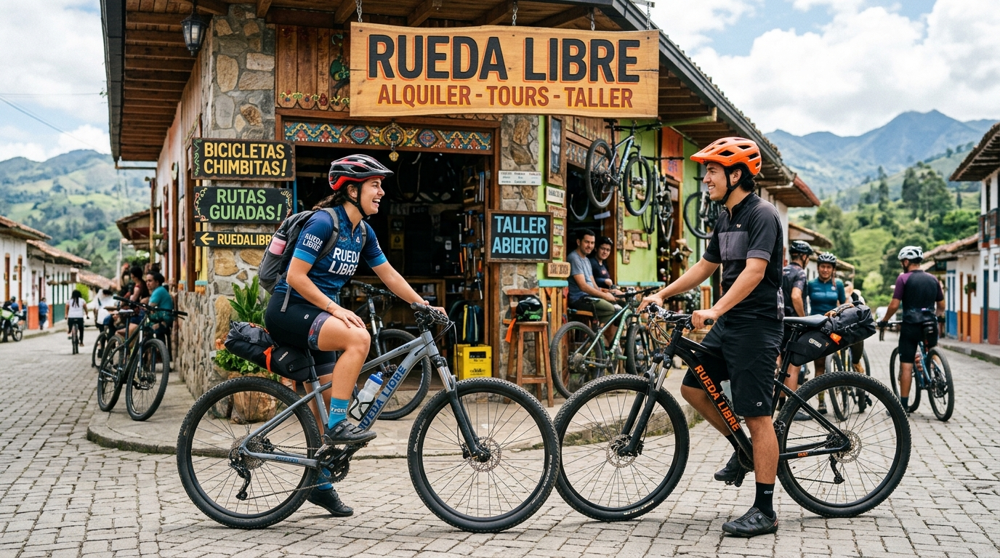
Bienvenido a Rueda Libre. Encuéntranos y descubre nuestros servicios.
Somos Rueda Libre, mas que un emprendimiento, una realidad, donde puedes alquilar bicicletas, ofrecemos recorridos guiados en la Ciudad de Medellin y por si algo no anda bien con tu cicla esta nuestro taller basico, no queremos errores.
Alquila bicicletas para recorrer Medellín a tu propio ritmo. El servicio incluye casco y candado para que disfrutes de tu recorrido con mayor seguridad. ¡Explora la ciudad sobre ruedas!
Descubre los lugares más interesantes de Medellín con nuestros recorridos guiados en bicicleta. Conoce la historia, la cultura y los rincones especiales de la ciudad. Vive una experiencia diferente mientras pedaleas.
Ofrecemos servicios básicos de mantenimiento para ayudarte a mantener tu bicicleta en buen estado. Revisamos aspectos esenciales para identificar posibles problemas. Cuida tu bicicleta y mejora tu seguridad al rodar. ¡Que nada detenga tu camino!
Ofrecemos servicios básicos de mantenimiento para ayudarte a mantener tu bicicleta en buen estado. Revisamos aspectos esenciales para identificar posibles problemas. Cuida tu bicicleta y mejora tu seguridad al rodar. ¡Que nada detenga tu camino!
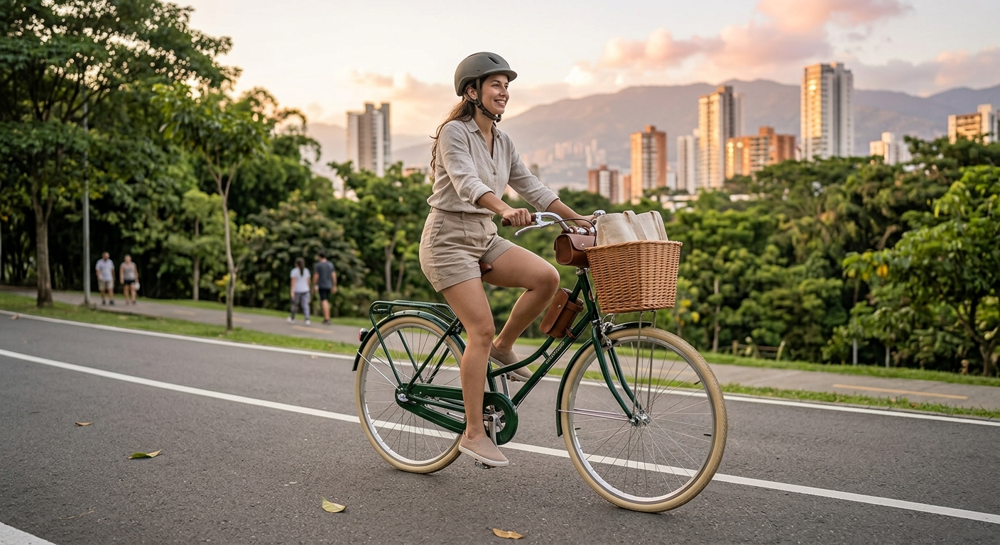
Cómoda y liviana para las ciclorrutas de la ciudad. Diseñada con un estilo tradicional elegante, posición de manejo erguida, asiento acolchado de gran confort y una práctica canasta frontal ideal para tus trayectos diarios o paseos relajados.
$10.000
RESERVAR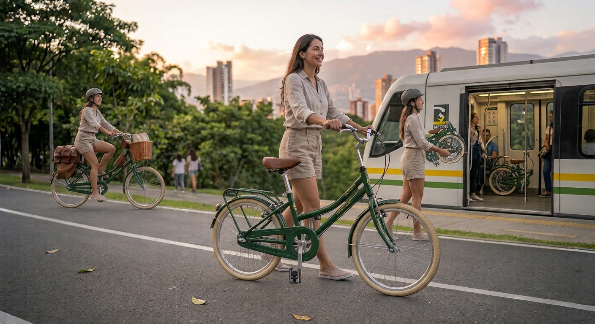
Se dobla en segundos; ideal para combinar con el metro. Un modelo compacto, versátil y ligero que se pliega con facilidad para que puedas llevarlo contigo en el transporte público o guardarlo sin ocupar espacio en casa u oficina.
$12.000
RESERVAR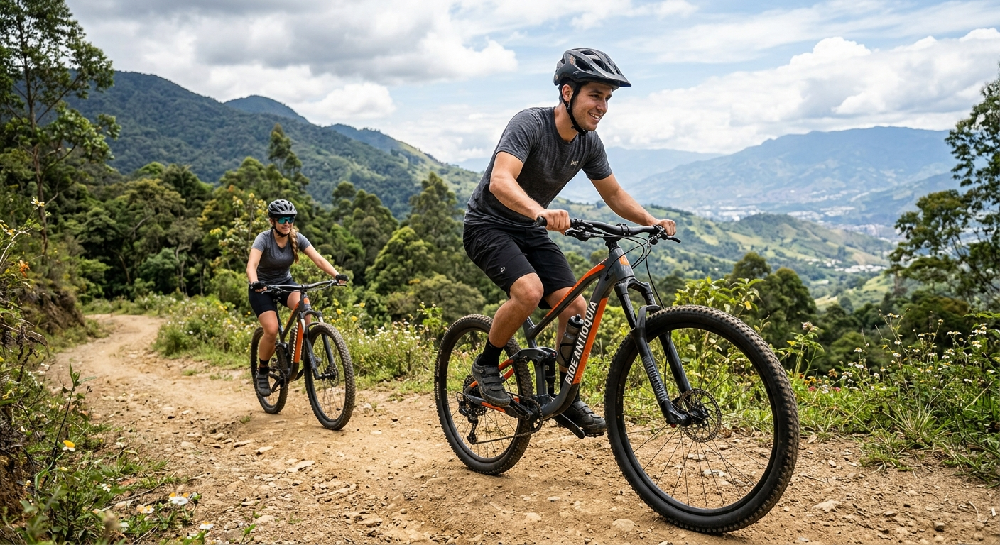
Suspensión delantera y 21 cambios para las subidas. Equipada con un sistema de cambios versátil y amortiguación frontal de alto rendimiento para absorber impactos, perfecta para conquistar senderos agrestes y caminos de montaña exigentes.
$15.000
RESERVAR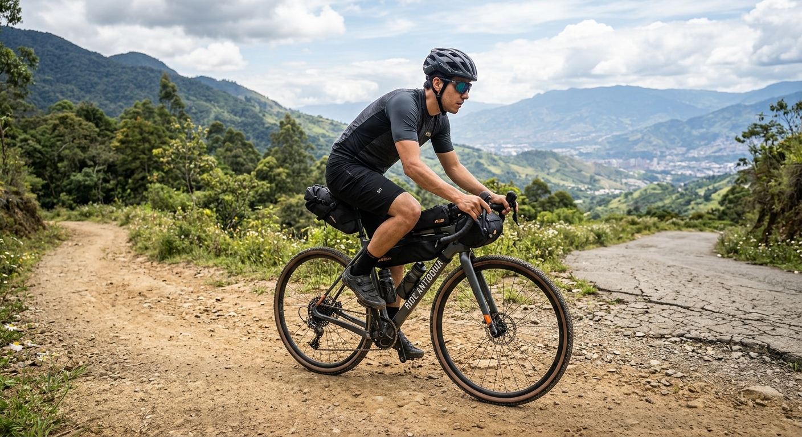
Para rutas mixtas de asfalto y destapado. Diseñada con geometría resistente y neumáticos polivalentes que ofrecen el balance perfecto entre la velocidad en carretera y la estabilidad en terrenos sin pavimentar.
$18.000
RESERVAR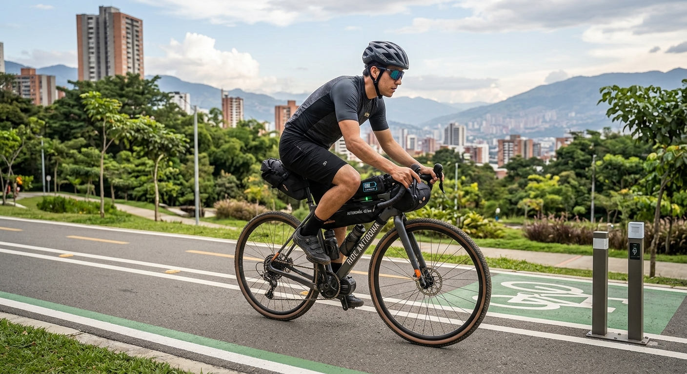
Asistencia eléctrica con 45 km de autonomía. Potente motor de asistencia al pedaleo y batería integrada de larga duración para recorrer la ciudad con el mínimo esfuerzo, superar cuestas con facilidad y llegar más lejos.
$25.000
RESERVAR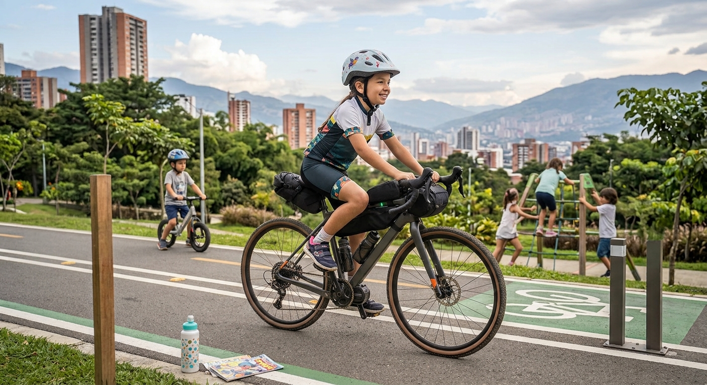
Ideal para niños de 6 a 10 años. Diseñada pensando en la seguridad, estabilidad y ergonomía de los más pequeños, facilitando su aprendizaje y diversión al aire libre con total confianza.
$8.000
RESERVAR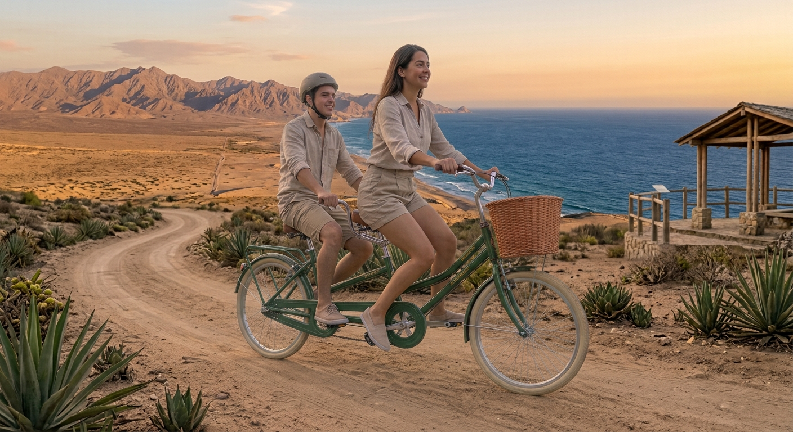
Para dos personas; perfecta para pasear en pareja. Una bicicleta compartida con doble sillín y sistema sincronizado de pedaleo, diseñada para vivir una experiencia divertida, coordinada y única en compañía.
$20.000
RESERVARVisita nuestro punto de atención y selecciona la bicicleta que mejor se adapte a tus necesidades y al recorrido que deseas realizar.
Proporciona la información necesaria para el registro del alquiler y verifica las condiciones del servicio.
Recoge tu bicicleta y asegúrate de recibir los accesorios incluidos, como el casco y el candado. Verifica que todo esté en buen estado antes de salir.
Explora Medellín a tu propio ritmo, respeta las normas de tránsito y devuelve la bicicleta en el lugar y horario acordados. ¡La ciudad te espera sobre ruedas!
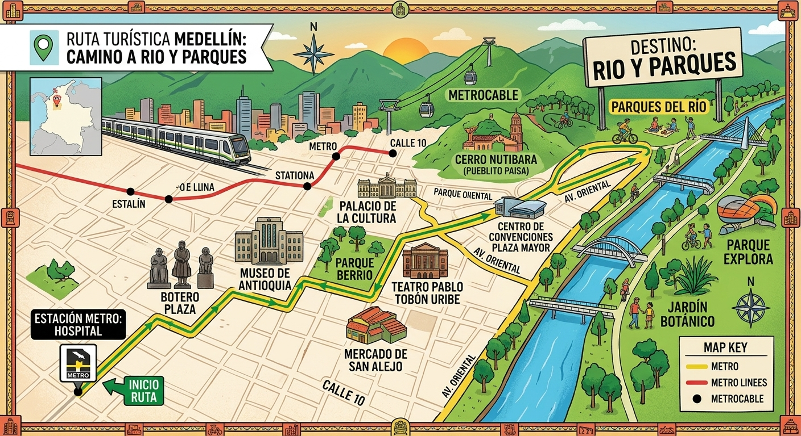
Estación Hospital -> Plaza Botero y Museo de Antioquia -> Palacio de la Cultura y Teatro Pablo Tobón Uribe -> Centro de Convenciones Plaza Mayor -> Parque Explora y Jardín Botánico.
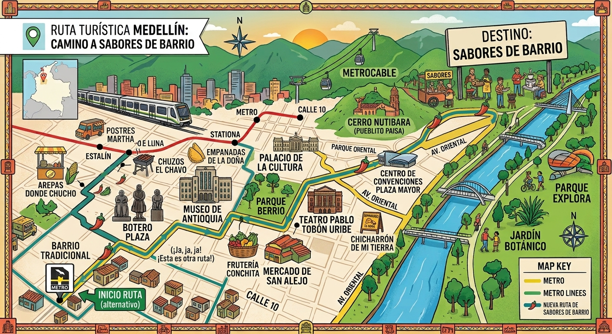
Descubre los lugares más interesantes de Medellín con nuestros recorridos guiados en bicicleta. Conoce la historia, la cultura y los rincones especiales de la ciudad. Vive una experiencia diferente mientras pedaleas.
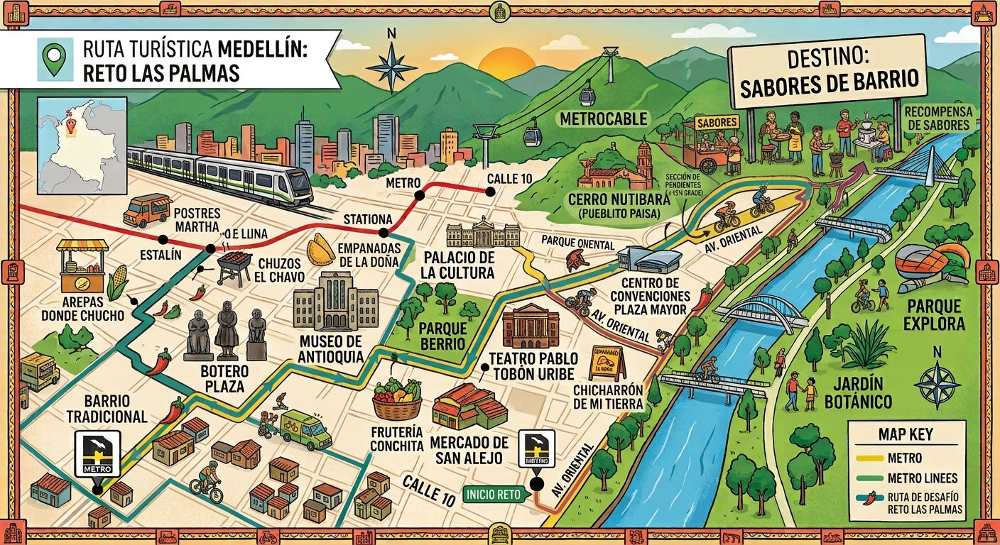
Ofrecemos servicios básicos de mantenimiento para ayudarte a mantener tu bicicleta en buen estado. Revisamos aspectos esenciales para identificar posibles problemas. Cuida tu bicicleta y mejora tu seguridad al rodar. ¡Que nada detenga tu camino!